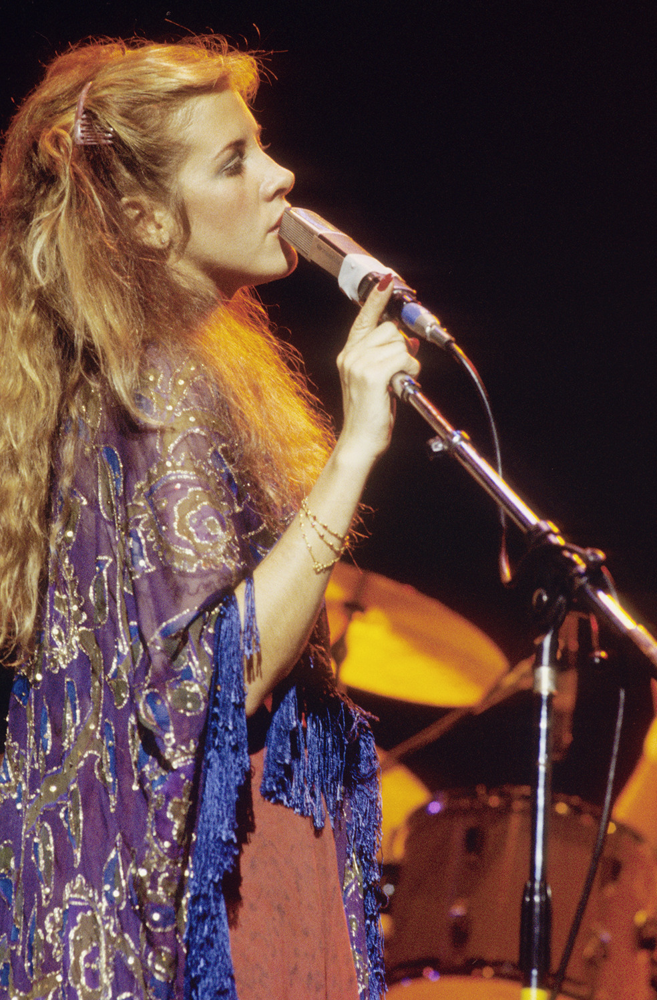
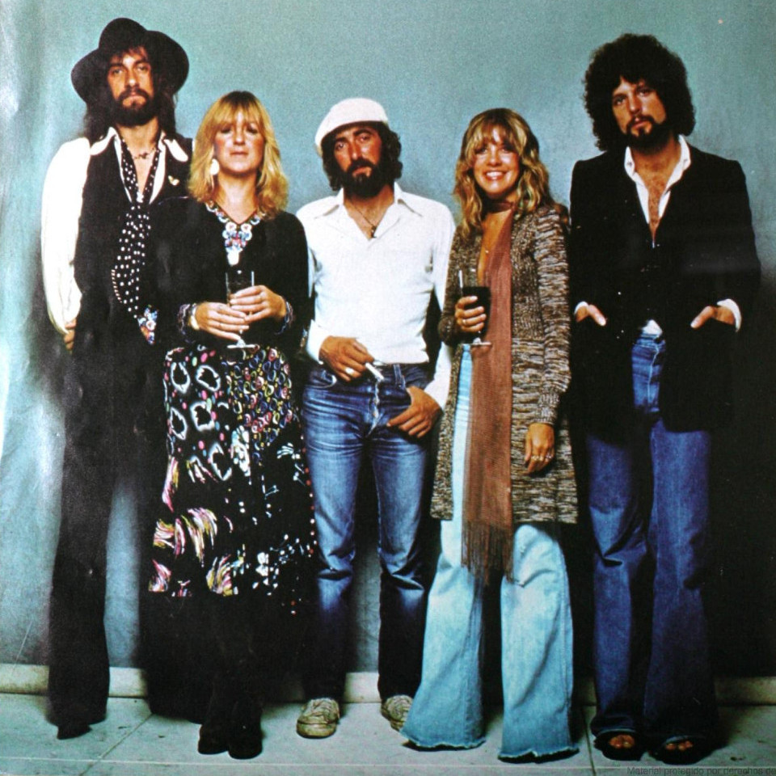

Biography
Stephanie Lynn Nicks (born May 26, 1948) is an American singer and
songwriter. Nicks is best known for her work as a songwriter and
vocalist with Fleetwood Mac, and her chart-topping solo career. She is
known for her distinctive voice, mystical stage persona and poetic,
symbolic lyrics.
Nicks joined Fleetwood Mac in 1975 along with her then- boyfriend,
Lindsey Buckingham. Fleetwood Mac's second album after the
incorporation of Nicks and Buckingham, was the best-selling album of
the year of its release. In 1981, while remaining a member of
Fleetwood Mac, Nicks began her solo career, releasing the studio album
Bella Donna. She has been known for her multiple wardrobe changes
during live performances, almost having a new outfit for each song she
sang. Nicks sings about the store where her iconic style all started
in the song "Gypsy" . In the song, Nicks sings of a store called the
Velvet Underground, a boutique in San Francisco, California where
famous rockers like Janis Joplin and Grace Slick were known to shop.
It was at the Velvet Underground where Nicks' unique and easily
recognizable style began.
Nicks is the only woman to have been inducted twice into the Rock and
Roll Hall of Fame, as a member of Fleetwood Mac in 1998 and as a solo
artist in 2019.
Music
"Gypsy"
Inspiration
“When you grow up as a girl, the world tells you the things that you are supposed to be: emotional, loving, beautiful, wanted. And then when you are those things, the world tells you they are: inferior, illogical, weak, vain, empty.”

Nicks has said that her vocal style and performance antics evolved
from female singers like Grace Slick and Janis Joplin. She admitted
inspiration when she saw Joplin perform live (and opened for her with
her first band Fritz) shortly before Joplin's death. Nicks owns a
strand of Joplin's stage beads. She also commented that she once saw a
woman in her audience dressed in dripping chiffon with a Gibson Girl
hairstyle and big boots, and Nicks knew she wanted something similar.
She took the look and made it her own. Over the years, she has
decorated her microphone stand with roses, ribbons, chiffon, crystal
beads, scarves, and small stuffed toys.
In late 2004, Nicks began visiting Army and Navy medical centers in
Washington, D.C. While visiting wounded service men and women, she
became determined to find an object she could leave with the soldiers.
She eventually decided to purchase hundreds of iPod Nanos, load them
with music, artists, and playlists which she would hand select, and
autograph them: I call it a soldiers' iPod. It has all the crazy stuff
that I listen to, and my collections I've been making since the 1970s
for going on the road, when I'm sick ... or the couple of times in my
life that I have really been down, music is what always dances me out
of bed.
The Band
Fleetwood Mac are a British-American rock band, formed in London in
1967. They have sold more than 120 million records worldwide, making
them one of the world's best-selling bands. In 1998, select members of
Fleetwood Mac were inducted into the Rock and Roll Hall of Fame and
received the Brit Award for Outstanding Contribution to Music.
Fleetwood Mac was founded by guitarist Peter Green, drummer Mick
Fleetwood and guitarist Jeremy Spencer. Bassist John McVie completed
the lineup for their self-titled debut album. Danny Kirwan joined as a
third guitarist in 1968. Keyboardist Christine Perfect, who
contributed as a session musician from the second album, married McVie
and joined in 1970. At this time it was primarily a British blues
band, scoring a UK number one with "Albatross", and also had other
hits such as the singles "Oh Well" and "Man of the World". All three
guitarists left in succession during the early 1970s, to be replaced
by guitarists Bob Welch and Bob Weston and vocalist Dave Walker. By
1974, all three had either departed or been dismissed, leaving the
band without a male lead vocalist or guitarist.
In late 1974, while Fleetwood was scouting studios in Los Angeles, he
was introduced to folk-rock duo Lindsey Buckingham and Stevie Nicks.
Fleetwood Mac soon asked Buckingham to be their new lead guitarist,
and Buckingham agreed on condition that Nicks would also join the
band. The addition of Buckingham and Nicks gave the band a more pop
rock sound.
Rhiannon
Nicks discovered the Rhiannon character in the early 1970s through a
novel about a woman named Branwen who is possessed by another woman
named Rhiannon. After writing the song, Nicks learned that Rhiannon
originated from a Welsh goddess, and was amazed that the haunting song
lyrics applied to the Welsh Rhiannon as well.
Live performances of the song were sometimes prefaced with Nicks
saying, "This song's about an old Welsh witch." The song built to a
climax in which Nicks' vocals were so impassioned that, as drummer and
band co-founder Mick Fleetwood recalled, "her Rhiannon in those days
was like an exorcism."
Gallery

Discography
- Rumours (1977)
- Tusk (1979)
- Bella Donna (1981)
- Mirage (1982)
- The Wild Heart (1983)
- Tango in the Night (1987)